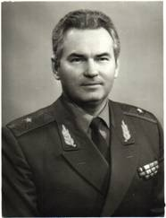
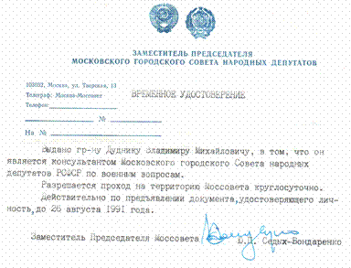
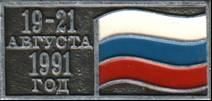
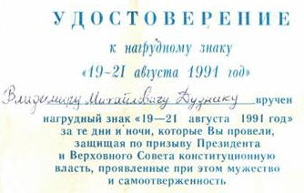

ТРЕВОЖНАЯ ОСЕНЬ 91–го
В середине августа 1991 года состоялся Х (Московский) Конвент EИDI (За Европейскую ядерную безопасность). Конвент проходил в гостинице «Россия». Вскоре после путча (о нем следующий сюжет) там же состоялся запланированный ранее Конгресс соотечественников за рубежом. Однако путч скомкал его. Видимо под впечатлением моего выступления на конвенте (об этом тоже ниже) один из семинаров с соотечественниками поручили мне. Готовился я, как водится, основательно. Однако семинара не получилось, т.к. вызвавшиеся руководить им вместе со мной генерал Никита Чалдимов (почти одновременно со мной уволенный с должности начальника кафедры ВПА за то, что «развел демократию») и председатель Союза защиты офицеров «Щит», бывший преподаватель училища Верховного Совета РСФСР, также уволенный за «вольнодумство», п/п-к В.Уражцев (ныне покойный) превратили семинар в митинг по осуждению гекачепистов (которые в это время уже «отдыхали» в Матросской тишине).
На конвент ENDI меня пригласил председатель Координационного Совета «Военные за демократию» народный депутат СССР полковник Владимир Сергеевич Смирнов. Сам он на нем не был. Меня в «России» он познакомил с Лобачевой Маргаритой Сергеевной, главным функционером ассоциации «Гражданский мир». По сути она была в нем главным лицом, т.к. председатель Ассоциации Таиров Таир Фаридович больше занимался какими-то своими делами и чаще бывал в отъезде. С тех пор и началось мое сотрудничество с Ассоциацией в качестве военного эксперта.
Полагая, что в организации Конвента Лобачева что-то решает, я ей сказал на какой секции хочу выступить, она сделала какую-то пометку и я успокоился.
Одним словом, 15 августа после обеда я нашел интересующую меня секцию (по проблемам безопасности) и сразу подал записку о выступлении. Это заседание вела шведский общественный деятель (тем не менее в ранге посла) Мейн Брит Теорин (вскоре она стала представлять Швецию в ООН). Сижу, слушаю других и жду, когда слово дадут мне. Меж тем время идет к концу (а у западников это свято), а мне слова не дают. Но я буквально вырвал выступление сам от микрофона в зале. Мне дали 5 минут.
Я говорил значительно дольше, но меня не перебивали. В итоге я почти слово в слово повторил свой доклад на экспертной игре в Ростове, добавив кое-что по ходу работы данной секции.
Сейчас я опускаю всю сложную, но важную для обоснования выводов теоретическую часть и излагаю основную часть этого выступления:
В условиях современной России возможны четыре сценария развития:
1) стабилизация обстановки на основе достижения консенсуса всеми политическими силами;
2) институализация и управление конфликтами с целью их ликвидации.
Но возможны, и более вероятны, противоположные сценарии:
3) военный путч и установление диктатуры;
4) развал Союза, балканизация страны.
Как мы видим, борются две взаимоисключающие тенденции. И если событие не реализуется в этом году, его вероятность уменьшается в последующем.
Это означает, что если события 1-2 не пойдут по предполагаемому сценарию определенное, но нам неизвестное время, то они вообще отменяются . И страна развивается по сценарию 3-4. Это т.н. «нулевой вариант» - т.е. крах российской государственности.
Как соотносятся эти сценарии с системой Европейской безопасности?
1) участники СБСЕ должны активно способствовать реализации сценариев I и II;
2) противодействовать сценарию IV;
3) противодействовать сценарию III – т.е. диктатуре можем лишь мы сами на базе радикальной военной реформы. Ее обязательные компоненты-условия - решительная демократизация армии, кардинальная реформа сферы управления…
На этом месте идет вставка другими чернилами. Скорее всего, я ее сделал уже в ходе работы Конвента и под его влиянием. Не скажу, что при оглашении этой вставки у меня не дрогнули колени. Вот она: «…в том числе – немедленная отставка министров-милитаристов Язова, Крючкова, Пуго и отстранение их от влияния на политику страны.
Таким образом, новая система европейской и мировой безопасности стала заложницей внутренней безопасности Советского Союза и напрямую зависит от нашей военной реформы и отстранению названных мной лиц от власти».
До путча оставалось 4 дня, но никто об этом не догадывался. Конечно – и я.
Закончив выступление, я сообщил об этом Маргарите Борисовне (а день на этом и заканчивался) и отправился домой. На следующий день меня ждали ранее запланированные дела, связанные с дачей.
Как я потом узнал, М.Б.Теорин устраивала в посольстве прием для актива Конвента. Искали и меня, но не нашли. Я был уже в Кубинке.
Дело в том, что в это время мы строили дачу. А время было крутое: ни денег, ни стройматериалов. Достанешь денег (в банке давали кредит, я брал 5 тыс.рублей) – не купишь официально материал. Купишь слева – нет квитанции для оправдания. Это теперь - грузи и вези. А тогда милиция останавливала на дорогах, требуя счет-фактуру на груз.
Мой тогдашний зять, майор Виктор Пономарев, работавший в Красногорском госпитале старшим ординатором 25 урологического отделения (сейчас он – его начальник, в чине полковника) договорился со строителями из Балашихи прикупить 0,5 кубометра бруса.
Машина моя стояла в Кубинке. 16 августа ушло на переговоры, звонки, подготовку машины. 17 августа выехал в Балашиху. Пока нашел строителей, оформил документы да погрузил пиломатериалы – настал вечер. Небо затянуло тучами: середина августа часто разражалась дождями и ночными грозами.
Представьте МКАД тех лет: узкая, совершенно темная, словно лесная дорога, которую и прозвали-то водители «дорогой смерти». К тому же разразился дождь. За время пути я встретил 3-4 сбитых тела у обочины МКАД. На душе стало тоскливо.
Воскресение прошло в хлопотах на даче. Я обратил внимание на сокращение информационных программ и увеличение народной музыки на радио. Я еще ничего не подозревал, но тревожное состояние почему-то усилилось. А поздно вечером (небо опять затянули тяжелые тучи и стемнело рано) не помню по какой надобности я оказался в «бермудском треугольнике». Так среди нас называли пространство между Ильинским-Жуковской и Архангельским. По темноте навстречу мне неслась кавалькада легковых машин с полным освещением и спецсигналами. Помню я сказал: - Шофера отвезли своих вождей и развлекаются. Кто-то из ехавших со мной поправил: - Одни с огнями не посмеют. Хозяев везут.
У меня возникло сомнение: куда могут везти хозяев в такую пору? На душе стало неспокойно, тем более в субботу и воскресенье было необычно спокойно и безлюдно – никто из действующих военных в эти дни на дачу не приехал. А днем вдоль Минского шоссе, по которому я ездил обычно, я обратил внимание на несколько групп командирских и радийных машин – «МШ». Но подумал, что Таманская дивизия выходит на КШУ (командно-штабные учения).
19-го я проснулся незадолго до 6 утра. По привычке сразу включил радиоприемник.
Передавали заявление Анатолия Лукьянова. А после него сразу – Заявление Советского руководства. Услышав эту кодовую фразу, я сразу сказал жене: - Переворот.
И точно тут же последовал текст о создании ГКЧП.
Из военных в это время на даче был только мой сосед капитан I ранга Николай Васильевич Ратозий. Он тоже уже не спал и, увидев мои сборы, не посоветовал мне ехать в Москву. – Здесь скорее найдут и без труда возьмут, - ответил я на это. Жена меня поддержала, и мы быстро собрались ехать в Москву. Тем более, что дома оставалась одна мама. Она наверняка беспокоилась за нас.
Выехали часов в 8 утра. Минское шоссе было забито техникой. Много танков, БТР и колесных машин или стояли по обочинам неисправными, судя по суете их экипажей и командиров, или валялись по кюветам. – Вот тебе и лучшая дивизия в Армии, - прокомментировал я это с горечью жене.
В Москву решили ехать не оп МКАД , а с боевой техникой по Кутузовскому проспекту. Его незадолго до этого Ю.М.Лужков покрыл отличным асфальтом. Конечно, все было разворочено, пыль стояла столбом, загорелись уличные фонари.
Обгоняя танки, я все время сигналил (в знак протеста). Аля (моя жена) говорит: - Вот они сейчас нас за это задавят. Но за танковым лязгом, которые шли, кстати, по осевой линии, нашего пиканья они, конечно, слышать не могли. Но зато слышали, и я думаю - понимали, уже собиравшиеся в кучки прохожие, многие со значками «Демроссии» на груди.
Дома нас ждала зареванная мать – уже не чаяла увидеть в живых. Высадив жену, я еще съездил на Варшавское шоссе, откуда слышался шум танковых колонн. Но танков не застал. Как потом выяснилось, они рассредоточились группами по улицам, контролируя переулки, переезды и т.п.
Я вернулся домой. Входя в квартиру, услышал звонок (как потом призналась мама, звонили и до этого). На часах было ровно 11часов 30 минут . ГКЧП - нет!
Дальнейшее лучше передать словами журналиста Вадима Речкалова, который поместил в «Общей газете», вышедшей через 10 лет после путча, материал о моем участии в отпоре ГКЧП.

ЗАЩИТНИК СВОБОДНОЙ РОССИИ №354Эту медаль генерал хранит отдельно от других как самую дорогую свою награду. На аверсе – крест с Георгием, на реверсе – Белый дом, надпись «Защитнику Свободной России» и номер 354. Получается, он 354-ый по счету. А 19 августа 1991 года Владимир Дудник был первым. Первым советским генералом, выступившим против ГКЧП.
Вот как это случилось .
Утром мне позвонили из Моссовета:
- Владимир Михайлович, говорит зампредседателя Юрий Седых-Бондаренко. Готовы ли вы послужить своему народу и возглавить штаб по отпору путчистам?
Я посмотрел на жену. Стал собираться. Опять звонок. Володя, однокашник мой по академии, генерал-лейтенант запаса: - Ну что, дождался? Мы вас, демократов, будем вешать на столбах!
Одеваюсь в гражданское, в кителе выходить на улицу уже страшно: люди очень быстро все поняли и глядели на военных с ненавистью. Опять телефон. Звонит Ваня, тоже однокашник и близкий товарищ, профессор, доктор педагогических наук: - Ну что, дождался? Мы вас к стенке!
Когда все закончилось, я им перезвонил. Живите, сказал, мы ведь и для вас старались.
Как в воду глядел – оба нынче процветают.
ПОГЛОЩЕНИЕ АРМИИ НАРОДОМ
Из Моссовета меня отправили обратно домой – переодеваться в военное. А чтоб народ не разорвал, дали значок делегата прошлогоднего съезда движения «Демократическая Россия». Так я все три дня и мимикрировал. Для военных пропуском служило мое генеральское удостоверение, фуражка, лампасы, погоны. А оказываясь среди народа, я надевал на форменную рубашку демороссовский значок.
В штабе было человек семь. Бывший командир автомобильной бригады полковник Храмов, отец депутата Моссовета Евгения Храмова, предоставил в наше распоряжение «Москвич»-каблучок. На этой машине мы с Храмовым время от времени и объезжали Москву. У Моссовета была своя разведка. Она родилась стихийно: люди звонили из автоматов и сообщали о местонахождении военной техники. Руководить ими вызвались Евгений Храмов и Лена, дочь генерала ГРУ. Невысокая девушка лет двадцати с косами.
Фамилии своей она не называла, боялась, что папа ее убъет. Сейчас Лена Клименко живет в Америке. Эти двое молодых людей периодически появлялись в Моссовете, сообщали нам обстановку, наносили на карту свежие данные. Их уличные агенты работали звеньями, по 3-5 человек. Стоят, например, в Климентьевском переулке три танка, а за ними постоянно наблюдает звено. В итоге мы знали положение каждой единицы бронетехники, каждой автомобильной колонны.
Стали думать, какую против них применить тактику. Посмотрели, что происходит на улицах, и дали команду своим разведчикам: «Поглощение армии народом!». То есть и на броню залезть, и покормить солдат, и по нужде в ближний дом сводить. Вначале это происходило спонтанно, но к концу дня 19-го уже организованно. Танки стояли как в кинохронике, когда показывают вступление в город освободителей. После этого уже ни одна машина не могла маневрировать.
ШПИОН ВАЛЕРА.
КГБ прислало к нам связного, т.е. своего соглядатая. Майора в гражданском с маленькой рацией. Теперь-то я знаю, что это обычный мобильный телефон. Звали майора Валерой. Он выходил в коридор, секретничал по своему телефону, был очень вежлив и предупредителен. У нас сложились товарищеские отношения. Мы обсуждали с ним явные глупости военных. Вместе жевали бутерброды, которые приносила Галина Ивановна Храмова. Валера шпионил в нашем штабе, но мы и не думали его прогонять. Хотя бы потому, что он был нашей зацепкой. В случае победы ГКЧП мог подтвердить, что мы не экстремисты, а просто пытались не допустить кровопролития. Я у него спросил: - Валера, У нас с тобой такие хорошие отношения сложились. Допустим, тебе по рации дадут команду меня расстрелять. Ты это сделаешь? - Не задумываясь!
В этом месте необходимо добавить: в нашей комнате еще находился пехотный капитан с рацией – от Московского военного округа. В отличие от Валеры, он за все время так и не вступил с нами в контакт. На мою просьбу связать меня с командующим округом отмалчивался.
Надо сказать – телефонная связь работала исправно. Но на все мои попытки связаться с командующим округом генерал-полковником Н.В.Калининым (кстати принявшим от ГКЧП назначение комендантом города) по телефону, отвечал неизменно лишь начальник штаба округа. (Д.В).
ДЕСАНТНИКИ БЕРУТ В КОЛЬЦО
В ночь на 20-е наши разведчики сообщили, что у стадиона «Динамо» стоит колонна воздушно-десантного полка: гусеничные боевые машины, зенитно-пулеметные установки, машины связи. То ли из Рязани, то ли из Тулы. Около пяти утра мы с Храмовым-старшим подъехали к головной машине. Я открыл дверь, представился. Внутри сидели полковник, подполковник и два майора.
- Кто вы такие? – спросил я. – А ты кто такой? – спросили меня. – Я генерал Свободной России! Привез воззвание от главкома Ельцина. – Не знаем мы таких генералов, - сказал полковник. – Командир, че ты с ними рассусоливаешь, - встрял майор. – Поставим обоих вон к трансформаторной будке, поиграем пистолетиком, посмотрим, как из штанов польется!
Мы посоветовали им не трогаться с места, так как город заполнен людьми, и в случае маневра неизбежны потери среди гражданского населения.
Вернулись в Моссовет – звонок из Красногорска. Некто сообщает, что на военный аэродром в Кубинке садятся тяжелогруженые транспортные самолеты ИЛ-76. Этим «некто» была моя старшая дочь Дудник Ольга Владимировна, бывшая замужем за врачом тамошнего госпиталя.
К вечеру мы уже знали, что в Кубинку прибыла воздушно-десантная дивизия из Одесской области под командованием генерала Востротина, героя Афганистана. Дали команду связным, чтобы они попросили население выйти на Минское шоссе и встречать дивизию по-праздничному. Когда мы с Храмовым 21-го утром подъехали к пересечению МКАД и шоссе, колонна была уже там, а вокруг машин толпились гражданские: священник в рясе, бабки с крынками молока. Опять нам угрожал какой-то полковник, но тут появился генерал Валерий Востротин. Невысокий, худощавый, лицо в шрамах. Левое плечо плащ-накидки приспущено, чтобы видна была Звезда Героя. При мне связался с командующим ВДВ Павлом Грачевым и заверил, что без команды сверху дивизия в город не пойдет.

ФЛАГИ СУХИЕ И МОКРЫЕ.
Путчисты оказались нерадивыми учениками Ленина, который говорил: «Однажды взявшись за оружие, надо решительно идти до конца». Тактика вооруженного восстания описана и опробована не только Лениным, но и якобинцами, и фашистами. Ведь стоило путчистам даже не отрубить связь, а просто перекоммутировать ее, и наш штаб оказался бы полностью обезврежен. Вместо того, чтобы перекрыть мосты, поставили технику в боковых улицах и ждали команды к штурму. А народ тем временем ходил где хотел и взбирался на танки. Это был безалаберный ввод войск без единого плана и руководства.
Они привыкли относиться к народу, как к стаду. Они думали, что народ увидит танки и испугается. К восстанию они не готовились. А народ взял и не испугался.
А мы действовали по-военному, постоянно передавая собранную информацию в Белый дом. У нас даже был свой ЗКП (Запасный командный пункт.- В.Р.): полковник в отставке Анатолий Кравцов проник в помещение Комитета по обороне и безопасности Верховного Совета СССР на проспекте Калинина, 19, и обеспечил резервную связь. Именно Кравцов утром 21-го заметил, что над Белым домом спускают российский триколор. И позвонил в канцелярию Ельцина, где об этом ничего не знали. Стали выяснять. Оказалось, технические работники меняют намокший под дождем флаг на сухой. Это обыденная процедура в той ситуации выглядела как капитуляция. Зато когда минут через тридцать над Белым домом взвилось сухое полотнище, люди на улице встретили его овацией.
ПРЕЗИДЕНТ И ТАНКИСТ
Знаменитый переход танковой роты на сторону Белого дома произошел после того, как президент России Ельцин 20-го августа ступил на броню танка майора Евдокимова и произнес свое знаменитое воззвание. И это был перелом. Потому что рота Евдокимова теоретически могла сделать с Белым домом то, что с ним сделал Ельцин в октябре 93-го.
Майор Евдокимов оказался в центре истории. Наполеон таких делал маршалами, которые потом выигрывали сражения. Как должен поступить президент? Евдокимову – звание полковника и в Академию Генштаба. Вот вам готовый командир Кремлевского полка.
Это было бы не только красивым, но и справедливым жестом. Таким образом Ельцин мог отблагодарить не только Евдокимова, но и всех тех рядовых истории, кто в те дни его поддержал. Но Ельцин к Евдокимову не снизошел. Не пожал руку, не сфотографировался.
А когда майор вернулся в дивизию, его просто затравили, в результате он оказался на второстепенной должности в военкомате, откуда и уволился.
И так со всеми. У Ельцина была блестящая возможность – сформировать свое окружение из тех, кто поддержал его в августе. Пусть они не хватали звезд с неба, но они были преданы лично Ельцину и проверены тремя днями путча. И эти люди за три-четыре года построили бы новую Россию. Но Ельцин отмел всех. Те, что творили свою историю, оказались забыты уже к концу августа. С народом поступили несправедливо. Случись сегодня большое потрясение, никто не выйдет. Родина сейчас – понятие абстрактное. Все разъедутся на дачи, и некому будет защитить ее грудью.
ПАРАД ПОБЕДИТЕЛЕЙ.
К вечеру 21-го Язов дал команду войска отходить. Думаю, он просто сломался. Не мог человек, славно воевавший в Отечественную, стрелять в свой народ. Вот десантники – другое дело. Эти бы рванули, не сомневаясь. Афганцы, в основном. Для них кровь что водица.
Войска уходили. Мы, как могли, пытались оповестить об этом всех. Но не успели, и на Новом Арбате погибли три мальчика, пытаясь остановить уже отступающую БМП. Наверное, те, кто сидел за броней, тоже не знали, что отступают. Иначе б остановились.
Путчисты были обречены в любом случае. Даже если б ГКЧП победил, они бы не смогли удержать власть. Среди них не было моральных авторитетов. И народ, вышедший на улицы, никто бы уже не смог загнать заводы, фабрики и поля. Невозможно управлять теми, кто тебя не признает. Чечня это подтверждает.
Когда вместо Юрия Седых-Бондаренко в Моссовете стал распоряжаться вернувшийся из отпуска председатель, мы поняли, что опасность миновала, и потихоньку разошлись.
Шпион Валера испарился, как будто его и не было. А потом был парад победителей и митинг. Во всю ширину улицы Горького пронесли триколор. Победители стояли на балконе Моссовета, но ни Храмовых, ни Анатолия Кравцова, ни Лены Клименко, ни Сергея Евдокимова среди них не было.
Окончание этой статьи могло бы быть таким: «Через 2 дня я вновь был на даче. И постоянно ко мне стала приходить мысль, что изменились только лица, но не власть (из дневниковой записи 24 августа 1991 года).
Несколько слов об «Общей газете».
Ее создал на базе 12-ти закрытых ГКЧП изданий бывший редактор «Московских новостей» настоящий Журналист Егор Владимирович Яковлев (к сожалению в прошлом году ушедший из жизни, вслед за созданной им газетой).
Это единственная газета в России, которая в августе 2001 года вышла под шапкой:
«Что с нами было 10 лет назад… и стало с нами 10 лет спустя» и вся была посвящена августу – 91. Не мог я 24 августа 1991 года предполагать, что «ОГ» через 10 лет на стр.7 поместит статью «Вечно живые члены ЦК. Выдвиженцы КПСС и сегодня управляют страной».
А на следующей странице в беседе с Е.Яковлевым бывший первый и единственный Президент СССР утверждает: «Путча могло бы не быть, если бы … 20-го подписали Союзный Договор». А в конце беседы на прямо поставленный Яковлевым вопрос признается, что путч полной неожиданностью для него не стал. «Заговор зрел».
Какого же лешего вы, Михаил Сергеевич, перед ним улетели в Форос? Испугались?
Или открыли путь заговорщикам? Это касается кое-кого еще, кто стоял на балконе Победителей.
Отгадка, а точнее загадка содержится в словах, которые произнес отец-основатель гласности, возвратившись из Фороса: - Всего я вам никогда не скажу и всего вы никогда не узнаете.
А я, например, как и многие другие, специально в этот день приехал в столицу. И три дня был счастлив. Потому что я, генерал мирного времени, участвовал в сотнях разного масштаба учений и маневров. Но это я служил государству, выполнял приказы старших.
А сейчас я следовал Долгу Чести и отстаивал новое Отечество от его врагов. Да, я был счастлив эти три дня! Я оказался нужен моему народу.
И теперь по праздникам наравне с орденами СССР я с гордостью ношу значок
Защитника Белого Дома.

